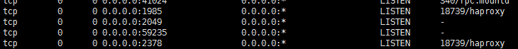

Etcd+Haproxy搭建etcd集群
- 环境要求：至少需要三台服务器。
etcd0:172.16.10.130 2379
etcd1:172.16.10.132 2379
etcd2:172.16.10.133 2379
haproxy:172.16.10.132 1985
- 应用安装及修改配置
安装haproxy：# yum install haproxy -y
修改配置：# vim /etc/haproxy/haproxy.cfg ##备份配置再修改
...........................
.......................... ####前面部分省略，不需要更改
timeout connect 10s
timeout client 1m
timeout server 1m
timeout http-keep-alive 10s
timeout check 10s
maxconn 3000
##########add by lcq###############
listen stats_1985
#frontend secure #自定义一个frontend，也可以放在listen或者backend中
bind 0.0.0.0:1985 #监听的ip端口号
stats enable #开关
stats uri /admin?admin #访问的uri ip:8888/admin?admin
stats auth admin:admin #认证用户名和密码
stats hide-version #隐藏HAProxy的版本号
stats admin if TRUE #管理界面，如果认证成功了，可通过webui管理节点
stats refresh 30s ##统计页面自动刷新时间
listen test1
bind 0.0.0.0:2378
mode tcp
option tcplog #日志类别,采用tcplog
maxconn 4086
#配置负载及状态检测
server s0 172.16.10.130:2379 weight 1 check inter 2000 rise 2 fall 5
server s1 172.16.10.132:2379 weight 1 check inter 2000 rise 2 fall 5
server s2 172.16.10.133:2379 weight 1 check inter 2000 rise 2 fall 5
etcd安装路径：/home/cec/etcd-v2.3.4-linux-amd64
/home/cec/apache-tomcat-7.0.70-ETCD
修改配置文件：
# vim ./apache-tomcat-7.0.70-ETCD/webapps/ROOT/WEB-INF/classes/sysconfig.properties
etcd.address=http://172.16.10.132:2378
- 启动
haproxy：# /etc/init.d/haproxy start

配置中心web：# cd apache-tomcat-7.0.70-ETCD/bin && ./start.sh
etcd：使用脚本启动，脚本在etcd-v2.3.4-linux-amd64/目录下
# ./etcd_start.sh etcd0:172.16.10.130 etcd1:172.16.10.132 etcd2:172.16.10.133
- 集群状态检测

etcd_keys：http://172.16.10.132:2378/v2/keys

etcd_members：http://172.16.10.132:2378/v2/members
- 集群故障检测
5.1 单点故障：手动停止一个etcd服务，测试配置中心注册新节点情况，测试应用可用性情况，测试故障节点恢复后数据同步情况。如下：停10.130的etcd服务。在配置中心注册新节点/123/test成功，并且在活动的etcd上看到数据，应用运行正常。

重新启动10.130上的etcd，看到数据有同步。

5.2 多点故障：停止10.132和10.133上的etcd，haproxy状态页面看到仅有s0存活，测试发现不能注册新节点。

测试应用，正常运行。此时etcd集群为可读不可写状态，应用可以读取数据，但是不能写入新数据。
重新启动故障的两台etcd，集群功能恢复正常。